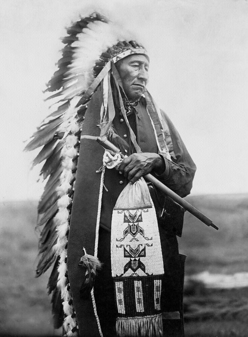

CARTA DEL INDIO SEATTLE ALPRESIDENTE DE ESTADOS UNIDOS
Así se acaba la vida y empieza la sobrevivencia
(título asignado por los transcriptores)

El gran jefe de Washington envió palabra de que desea comprar nuestra tierra. El gran jefe también nos envió palabras de amistad y buenos deseos. Esto es muy amable de su parte, desde que nosotros sabemos que tiene necesidad de un poco de nuestra amistad en reciprocidad.
Pero nosotros consideramos su oferta; sabemos que de no hacerlo así el hombre blanco puede venir con pistolas a quitarnos nuestra tierra.
El gran jefe Seattle dice: "El gran jefe de Washington puede contar con nosotros sinceramente, como nuestros hermanos blancos pueden contar el regreso de las estaciones. Mis palabras son como las estrellas - no se pueden detener".
¿Cómo intentar comprar o vender el cielo, el calor de la tierra? La idea nos resulta extraña. Ya que nosotros no poseemos la frescura del aire o el destello del agua. ¿Cómo pueden comprarnos esto? Lo decidiremos a tiempo.
Cada pedazo de esta tierra es sagrado para mi gente. Cada aguja brillante de pino, cada ribera arenosa, cada niebla en las maderas oscuras, cada claridad y zumbido del insecto es santo en la memoria y vivencias de mi gente.
Sabemos que el hombre blanco no entiende nuestras razones. Una porción de muestra tierra es lo mismo para é1, que la siguiente; para é1, que es un extraño que viene en la noche y nos arrebata la tierra donde quiera que la necesite. La tierra no es su hermana sino su enemiga y cuando la ha conquistado se retira de allí. Deja atrás la sepultura de su padre, no le importa.
Plagia la tierra para su hijo, no le importa. Olvida tanto la sepultura de su padre como el lugar en que nació su hijo. Su apetito devorará la Tierra y dejará detrás sólo un desierto. La sola vista de sus ciudades, llenas de pánico a los ojos del piel roja. Pero quizá esto es porque el piel roja es un "salvaje y no entiende...
No existe un lugar pacífico en las ciudades del hombre blanco. Ningún lugar para oír las hojas de la primavera o el susurro del vuelo de los insectos. Pero quizá porque yo soy un salvaje no logro comprenderlo, el repiquetear parece que insulta los oídos ¿Y qué vivir, si el hombre no puede oír el adorable lamento del chotacabras o el argumento de las ranas alrededor de una charca en la noche?
El Indio prefiere el agradable sonido del viento lanzado sobre la cara del estanque, olfatear el viento limpio por un mediodía de lluvia o esencia del pino. El aire es algo muy preciado para el piel roja. El hombre blanco parece no notar el aliento del aire. Como un agonizante de muchos días, está aterido para olfatear.
Si decidiera aceptar lo haría con una condición. El hombre blanco debe tratar a las bestias de esta tierra como a sus propios hermanos. Yo soy un salvaje y no entiendo ninguna otra forma. He visto millares de búfalos muertos por el hombre blanco, para que pudiera pasar un tren.
Yo soy un salvaje, y no entiendo como el humo del caballo de hierro puede ser más importante que el búfalo, el que nosotros matábamos solamente para poder sobrevivir ¿Qué es el hombre sin las bestias? Si todas las bestias fuéranse el hombre moriría de una gran depresión de espíritu. Cualquier cosa que le pase a los animales le pasará también al hombre. Todos los seres están relacionados. Cualquier cosa que acontezca a la tierra acontecerá también a sus hijos.
Nuestros hijos han visto a sus padres humillarse por la defensa. Nuestros guerreros han sentido vergüenza, y han cambiado sus días a la ociosidad, y contaminan sus cuerpos con dulce comida y bebida. Importa poco donde pasaremos el resto de nuestros días - no somos demasiados.
Unas pocas horas, unos pocos inviernos y ninguno de los niños de las grandes tribus, que alguna vez vivieron sobre la Tierra, saldrán para lamentarse de las tumbas de una gente que tuvo el poder y la esperanza.
Sabemos una cosa que el hombre blanco puede alguna vez descubrir. Nuestro Dios es su mismo Dios. Ustedes piensan ahora que lo poseen, como desean poseer nuestra tierra. Pero no puede ser. Él es el Dios del hombre y su compasión es indistinta para el blanco y para el rojo. La Tierra es algo muy preciado para Él, y el detrimento de la Tierra, es una pila de desprecios para el Creador. A los blancos les puede pasar también, quizá pronto, lo que a nuestras tribus. Continúen contaminando su cama y se sofocarán una noche en su propio desierto.
Cuando los búfalos sean exterminados, los caballos salvajes amansados, la esquina secreta de la floresta pisada con la esencia de muchos hombres y la vista rosada de las colinas sazonada de la charla de las esposas ¿donde estará la maleza? se habrá ido ¿Donde estará el águila? se habrá ido. Decir adiós al volar... al cazar... la esencia de la vida empieza a extinguirse...
Nosotros entenderíamos si supiéramos lo que el hombre blanco sueña ¿qué espera describir a sus hijos en las largas noches de invierno? ¿qué visiones arden dentro de sus pensamientos? ¿qué desean para el mañana?... Pero nosotros somos salvajes. Los sueños del hombre blanco están ocultos para nosotros, y por ello caminaremos por nuestros propios caminos. Si llegamos a un acuerdo será para asegurar su conservación como lo han prometido.
Allí quizá podamos vivir nuestros pocos días como deseamos. Cuando el último piel roja se desvanezca de la tierra y su memoria sea solamente una sombra de una nube atravesando la pradera, estas riberas y praderas estarán aun retenidas por los espíritus de mi gente, por el amor a esta tierra como los recién nacidos aman el sonido del corazón de sus padres.
Si les vendemos nuestra tierra, ámenla como nosotros la hemos amado. Preocúpense de ella, como nosotros nos hemos preocupado. Mantengan la tierra como ahora la adquieren, con toda su fuerza, con todo su poder y con todo su corazón. Presérvenla para sus hijos, y ámenla como Dios nos ama a todos nosotros. Una cosa sabemos; su Dios es nuestro Dios. La tierra es preciosa para EL. Ni el hombre blanco está exento de su destino.
|